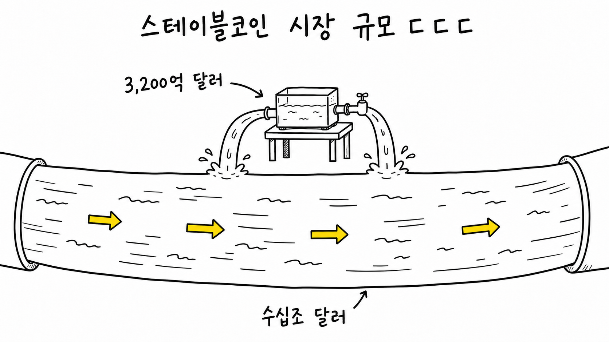
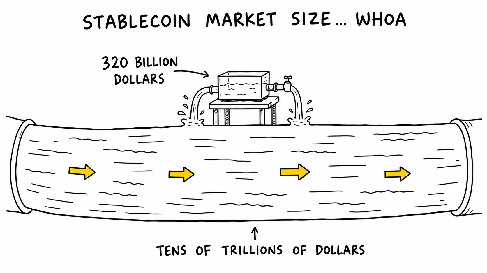

코인과 예측시장은 국가 바깥에서 자라온 것 같지 않나요? 근데 미국은 이들을 때려잡으려고 하기는 커녕 디지털 달러 시스템으로 흡수하고 새로운 금융시장으로 편입하려고 하는 것처럼 보여요. 물론 마찰이 있지만 결국 미국이 품을 거 같아요. 그리고 알고 보니까요. 이거 미국이 예전부터 잘해오던 거 같아요.
Do coins and prediction markets not feel like they grew up outside the state? And yet America does not seem to be trying to crush them. It looks more like it wants to absorb them into a digital dollar system and bring them into a new kind of financial market. Of course there is friction, but I get the feeling America will end up embracing them. And the more I look into it, the more this seems like something America has been good at for a long time.
미국에서 Kalshi와 Polymarket 같은 예측시장 플랫폼을 두고 갑론을박을 벌이고 있습니다. 트럼프 대통령은 SNS에서 "예측시장에 대한 CFTC의 독점적 권한을 유지하는 것이 매우 중요하다"는 식으로 말했습니다. 트럼프는 예측시장 플랫폼을 연방 차원의 금융시장으로 인정하겠다는 겁니다. 반대로 여러 주정부는 예측시장을 도박이라고 생각하고 있습니다.
In the United States, a fight is unfolding over prediction market platforms like Kalshi and Polymarket, mainly between the federal government and state governments. President Trump said on social media that it is "critically important" to maintain the CFTC's exclusive authority over prediction markets. In other words, Trump is treating prediction market platforms as federally supervised financial markets. Several state governments, on the other hand, see prediction markets as gambling.
What do you think? Is this gambling? Or is it a financial product?
America is arguing about it.
Today’s Ingredients
Report on Trump's prediction market and CFTC comments — coindesk.com
Overview of the clash between state regulation and CFTC jurisdiction — forbes.com
CFTC record for Kalshi's designated contract market registration — cftc.gov
Official explanation of the Iowa Electronic Markets — iem.uiowa.edu
Iowa Electronic Markets and the probability interpretation of prediction market prices — cambridge.org
전 세계 스테이블코인 시장 규모가 3,200억 달러 수준까지 커졌다고 합니다. 전 세계를 돌아다니는 스테이블코인의 총액이 약 440조 원 정도 되는 건데요. 삼성전자 시가총액이 최근에 대략 500조~600조 원 수준이라고 하고요. 한국 1년 국가 예산이 670조 원 수준이라고 합니다. 그러니까 발행된 스테이블코인 진짜 많은 거예요. 뿌려진 게 3,200억 달러고요. 연간 거래량은 수십조 달러 규모라고 합니다.

스테이블코인은 은행 밖에서 돌아다니는 디지털 달러에요. USDT와 USDC 같은 달러 스테이블코인들이 크립토 시장 안에서 현금처럼 쓰이고 있어요. 은행 계좌 없이요. 그리고 스테이블코인의 대부분은 달러 스테이블코인이고, 달러 스테이블코인 발행사가 가지고 있는 준비금의 상당수가 미국 국채입니다. 전 세계 사람들이 디지털 달러를 쓰면 결국 미국채 수요가 늘어나요. 미국은 중국을 대신할 국채 수요처를 찾고 있었고요.
한국 노래 중에 이런 가사 있어요. 찾았다 내 사랑~ 내가 찾던 사랑~
달러 스테이블 코인은 미국이 딱 찾던 거에요. 이제 어떻게 될까요? 모르긴 몰라도 이 변화를 잘 따라가야겠다는 생각은 들어요. 미국이 열을 내고 있으니까요.
The global stablecoin market has reportedly grown to around $320 billion. That means the total value of stablecoins moving around the world is roughly 440 trillion Korean won. Samsung Electronics' market capitalization has recently been somewhere around 500 to 600 trillion won, and South Korea's annual government budget is around 670 trillion won. So yes, there is a lot of stablecoin supply out there. The supply is $320 billion, and annual transaction volume is reportedly in the tens of trillions of dollars.

Stablecoins are digital dollars moving around outside the banking system. Dollar stablecoins like USDT and USDC are used like cash inside the crypto market, without bank accounts. And most stablecoins are dollar stablecoins. A large share of the reserves held by dollar stablecoin issuers is in U.S. Treasuries. If people around the world use digital dollars, that eventually creates demand for U.S. government debt. America has been looking for buyers of Treasuries to replace China.
There is a line from a Korean song that goes something like: I found my love, the love I was looking for.
Dollar stablecoins may be exactly what America was looking for. What happens now? I do not know for sure, but I do feel like this is a change worth following closely. America is clearly putting serious energy into it.
Today’s Ingredients
Report on stablecoin market capitalization reaching $321 billion — coindesk.com
Overview of the $320 billion stablecoin market and transaction volume — defiprime.com
BIS-related comments on the $320 billion stablecoin market — gncrypto.news
저는 미국이 달러 스테이블코인 정책에 진심인 것은 이해했어요. 스테이블코인이 미국 국채 수요를 높이고, 이는 미국의 달러 패권 문제와도 연결되어 있으니까요. 근데 '예측시장은 왜 저렇게 제도권 안으로 품으려고 하지?'라는 궁금증이 생기더라고요. 조금 알아보니까 미국 시카고 선물 시장의 역사가 '투기를 허용하되 규율한다'는 긴장 위에서 발전했대요. 그러니까 미국이라는 나라가 원래 이런 걸 잘 받아들이는 나라같아요. 미국에 사는 분이 보신다면 알려주세요. 제 말이 맞나요? 저는 그렇게 느꼈어요. '아, 무작정 틀어막는 나라가 아니구나.'
그러니까 제가 느끼기에 크립토 제도화는 미국의 의지도 맞고, 미국이 잘하는 것이기도 한 거죠? 미국은 강대국이고, 크립토에 대한 의지도 있고, 또 이런 거에 미국이 전문이야. 그렇게 생각하니까 금방 세상이 바뀌어버릴 거 같다는 조급함도 느껴져요.
cf
아니 근데, 한국의 오태민 작가는 10년도 더 전에 비트코인을 발견하고 이거 미국이 품는다고 사람들한테 말하고 다녔다는 거 아니에요? 이 생각을 10년 전에 어케 했지...?(발행자가 오태민 작가님 팬인 거 이해 좀)
I understand why America is serious about dollar stablecoin policy. Stablecoins can increase demand for U.S. Treasuries, and that connects directly to dollar hegemony. But I kept wondering, "Why are they also trying so hard to bring prediction markets into the system?" After looking into it a bit, I found that the history of Chicago's futures markets developed around a tension: allow speculation, but discipline it with rules. So maybe America is the kind of country that is unusually good at absorbing this sort of thing. If anyone reading this lives in the United States, please tell me if I am wrong. That is how it feels to me. "Ah, this is not a country that simply blocks everything."
So, as I see it, crypto institutionalization is both America's will and something America is good at. America is a superpower, it clearly has the will to embrace crypto, and it is also kind of a specialist in this kind of thing. Thinking about it that way makes me feel a little rushed, as if the world could change very quickly.
cf
But then again, the Korean writer Oh Tae-min apparently discovered Bitcoin more than ten years ago and was already telling people that America would embrace it. How did he think of that more than ten years ago...?(Please understand that the publisher is a fan.)